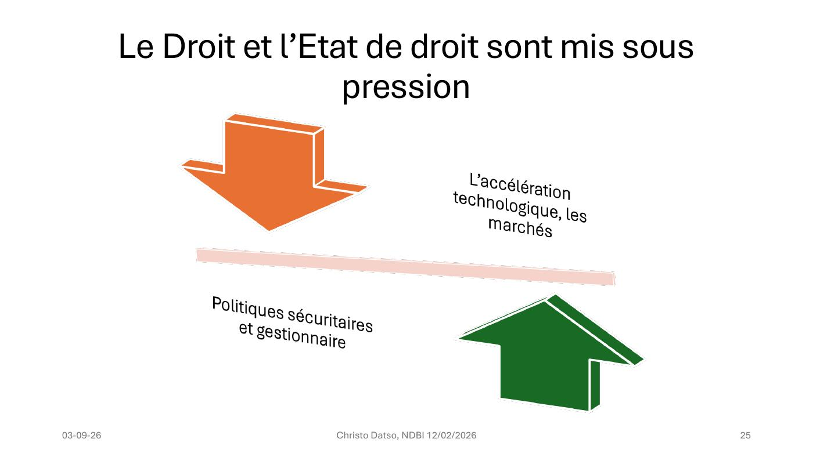

DIAPOSITIVES 21 à 25
Du procès-fiction au projet de loi réel.
On vous voit. Le procès de la reconnaissance faciale — Théâtre National Wallonie-Bruxelles, 14 et 15 octobre 2024.
La conférence a lieu en février 2026. La fiction était datée de juin 2026 : elle n’était donc, au moment où l’exposé la cite, ni du passé ni tout à fait de l’avenir.
Le 2 février 2025, la partie de l’AI Act portant sur les pratiques interdites entre en application. Elle prohibe la reconnaissance faciale en temps réel dans l’espace public à des fins répressives — mais prévoit des exceptions, qu’il revient à chaque État membre de transposer. La Ligue des droits humains et la Liga voor mensenrechten plaident pour une interdiction sans exception. Trois raisons :
Les exceptions visent la recherche ciblée de personnes, la prévention d’une menace terroriste réelle, ou l’identification d’un suspect pour « certaines infractions pénales » — catégorie très large. Le texte vise notamment la criminalité environnementale, qui peut englober aussi bien le trafic d’espèces menacées que les dépôts clandestins. Ce n’est pas une hypothèse d’école : un appel à projets de la Région wallonne a employé ces termes pour des incivilités liées aux dépôts sauvages, et un président de parti a proposé d’utiliser la reconnaissance faciale contre ceux-ci.
Sur le terrorisme : plusieurs recherches décrivent une « focalisation unilatérale sur les musulmans », faisant de communautés spécifiques « une communauté suspecte ». L’enregistrement dans les bases dépend du contexte politique — lors du conflit syrien, le « climat de panique » a augmenté « excessivement le nombre de personnes suspectées de radicalisation ». Et en novembre 2024, une proposition de résolution visait à étendre la liste belge des organisations terroristes aux mouvements Black Lives Matter, antifasciste et Extinction Rebellion.
L’Organe de contrôle de l’information policière a dénoncé à plusieurs reprises des utilisations illégales de ces bases par des policiers, décrivant en 2023 une culture de l’« indulgence » à l’égard des traitements illicites. S’y ajoute la surreprésentation, dans ces bases, de groupes historiquement marginalisés — personnes d’origine étrangère, personnes sans abri. La reconnaissance faciale « renforcerait la surveillance de ces groupes en automatisant leur contrôle, et ce de façon parfaitement invisible ».
Lorsqu’il s’agit de renoncer à nos libertés pour renforcer le pouvoir de l’État, il est nécessaire de s’interroger sur les conséquences qu’auraient ces décisions dans le contexte d’un régime autoritaire.
Et cette phrase, que l’exposé met en exergue, citant la chercheuse Sofie Royer (KU Leuven) :
« L’histoire montre qu’une fois qu’une technologie s’est imposée dans la société, on ne peut plus revenir en arrière. »
Le ministre de la Justice en affaires courantes avait déposé, en décembre 2024, une proposition de loi permettant à la police d’utiliser la reconnaissance faciale en temps réel. « La précipitation et l’urgence sont rarement bonnes », répond Royer.
L’exposé cite ensuite l’accord de coalition fédérale belge 2025-2029, dit « Arizona », du 31 janvier 2025 (p. 156) :
« Un instrument d’évaluation du risque, réalisé sur une base scientifique, permet d’évaluer le risque de récidive. Dans certains cas (violence sexuelle et/ou intrafamiliale, harcèlement, radicalisation et terrorisme…), il est essentiel de pouvoir prendre des décisions réfléchies telles que l’arrestation ou la libération, éventuellement sous quelles conditions, l’opportunité et l’intensité du traitement et de l’accompagnement, etc. Tout au long de la chaîne judiciaire, il convient de davantage recourir à l’évaluation des risques. »
Cité par Manuela Cadelli. Les italiques — base scientifique, réfléchies — sont l’objet de sa critique : un score de récidive n’est pas une décision réfléchie, et sa scientificité est précisément ce qui est en litige.
| Date | Sujet |
|---|---|
| 2 févr. 2026 | Interdire les réseaux sociaux aux mineurs : une fausse bonne idée |
| 19 janv. 2026 | Accès à la vie privée contre un visa américain : un projet inquiétant |
| 19 déc. 2025 | Reconnaissance faciale : faut-il craindre une surveillance de masse ? (ARTE Europe Hebdo) |
Le visa américain. L’UE négocie avec Washington l’extension de l’exemption de visa à tous ses États membres. La contrepartie exigée : un partage considérable de données, dont les données biométriques — empreintes, photo du visage et de l’iris — mais aussi origines ethniques, opinions politiques, croyances. La négociation est connue par la fuite d’un document du Conseil. L’exposé souligne le cumul avec la Section 702 du FISA, qui permet à la NSA ou à la CIA de surveiller sans mandat individuel les communications de non-Américains hors des États-Unis : « le mariage entre un transfert de données biométriques et l’application de la Section 702 crée un cocktail toxique ». Et cette observation, qui vaut au-delà du cas : l’histoire des programmes de surveillance montre un élargissement constant des usages — conçus pour le contre-terrorisme, ils servent ensuite à l’espionnage économique, à l’immigration, aux délits de droit commun.
Les mineurs sur les réseaux. L’argument développé est le même retourné : pour faire respecter l’interdiction, il faut une vérification d’âge robuste — pièce d’identité officielle couplée à la reconnaissance faciale par selfie. « Sous prétexte de protéger l’enfant, on instaure une identité numérique administrée et traçable pour toute la population. » L’exemple australien montre par ailleurs l’inefficacité : VPN, comptes d’aînés, exode vers des messageries chiffrées moins modérées. « Le message implicite est catastrophique : pour accéder à la vie sociale numérique, il faut apprendre à tromper le système. »

C’est la thèse de toute la partie : le droit n’est pas attaqué de front, il est pris en tenaille — par le haut, la vitesse de la technique et l’intérêt des marchés ; par le bas, la demande sécuritaire et la logique gestionnaire. Aucune des deux forces ne le combat ; elles le rendent simplement trop lent pour compter.